required_pkgs <- c("tidyverse", "glmmTMB", "marginaleffects", "patchwork", "GGally",
"distributional", "ggdist", "tinytable", "performance", "TMB", "Matrix")
# Reinstalling Matrix/TMB/glmmTMB together (rather than one at a time) avoids the
# most common cause of glmmTMB load failures: an ABI mismatch between glmmTMB's
# compiled code and the Matrix/TMB versions it was linked against.
missing_pkgs <- required_pkgs[!vapply(required_pkgs, requireNamespace, logical(1), quietly = TRUE)]
if (length(missing_pkgs) > 0) {
install.packages(missing_pkgs)
}
# Verify glmmTMB actually loads and can fit a trivial model - this is the step
# that catches ABI mismatches that "successful" installation can still leave behind.
glmmtmb_ok <- tryCatch({
library(glmmTMB)
test_fit <- glmmTMB(mpg ~ wt, data = mtcars)
TRUE
}, error = function(e) {
message("glmmTMB failed to load/fit: ", conditionMessage(e))
FALSE
})
if (!glmmtmb_ok) {
message("Reinstalling TMB and glmmTMB from source to resolve a likely ABI mismatch...")
install.packages(c("TMB", "glmmTMB"), type = "source")
# Re-check after the source reinstall
glmmtmb_ok <- tryCatch({
library(glmmTMB)
glmmTMB(mpg ~ wt, data = mtcars)
TRUE
}, error = function(e) {
message("Still failing: ", conditionMessage(e))
message("If this persists, check that you have a working C++ compiler installed ",
"(Rtools on Windows, Xcode command line tools on macOS), then restart R and re-run this chunk.")
FALSE
})
}
stopifnot("glmmTMB did not install/load successfully - see messages above" = glmmtmb_ok)Before you start
Run the chunk below once to install everything you need. It’s written to avoid the most common glmmTMB installation failures:
- Binary vs. source mismatch:
glmmTMBlinks againstTMBandMatrix, which must be built with compatible ABI versions. Installing all three together from the same repository snapshot (rather than upgrading one in isolation) avoids “package was installed with a different version” load-time errors. - Stale compiled objects after an R or
Matrixupgrade: if you’ve upgraded R recently and see an error likeError: package or namespace load failed for 'glmmTMB' ... unable to load shared object, reinstallingTMBandglmmTMBfrom source with--no-multiarch(viainstall.packages(type = "source")) usually fixes it. - Missing compiler toolchain: source installs of
TMB/glmmTMBneed a working C++ compiler. On Windows this means Rtools; on macOS, Xcode command line tools. The check below tells you if compilation is unavailable before you hit a cryptic error.
Setup
Run this at the start of every session (after the install chunk above has succeeded once).
library(tidyverse) # Data manipulation and plotting
library(glmmTMB) # Generalized linear (mixed) models
library(marginaleffects) # Compute marginal/conditional effects
library(patchwork) # Combine multiple plots
library(GGally) # Pairwise plots
library(distributional) # Simulate mixture/gamma/normal distributions (Part 3)
library(ggdist) # stat_slab() for predicted-distribution plots (Part 2)
library(tinytable) # tt(): simple, nice-looking results tables
library(performance) # r2(), r2_tjur(): model R-squared measures
theme_set(theme_minimal(base_size = 14))
# silence marginaleffects warnings about glmmTMB
options(marginaleffects_safe = FALSE)
set.seed(333)Coding style & functions used throughout
Before diving into the case studies, here’s a quick reference for the conventions and workhorse functions used repeatedly in this handout.
The native pipe, |>. Wherever you see data |> mutate(...) |> ggplot(...), read it left-to-right as “take data, and then apply mutate(), and then pass the result to ggplot()”. It’s equivalent to nesting the calls (ggplot(mutate(data, ...))), just easier to read and edit in sequence. We use the base-R pipe (|>), not the older magrittr pipe (%>%) — for our purposes here they behave the same way.
Simulating data with tibble() and random-draw functions. Every case study starts by simulating data rather than loading a real dataset. We pick “true” parameter values (an intercept, one or more slopes) up front, then generate observations from a known random process:
rnorm(n, mean, sd)— draws from a Normal distribution (continuous outcomes, e.g. weight, petal length)rbinom(n, size = 1, prob)— draws from a Bernoulli/Binomial distribution (presence/absence outcomes)rpois(n, lambda)— draws from a Poisson distribution (count outcomes, e.g. abundance)runif(n, min, max)— draws from a Uniform distribution (often used to simulate a predictor, not an outcome)distributional::dist_*()+generate()— an alternative way to simulate predictors (e.g.dist_beta(),dist_gamma(),dist_mixture()) used in Part 3
Simulating this way means we know the ground truth (the exact intercept and slopes used to generate the data), so we can directly check whether a fitted model recovers it — a habit worth carrying into your own work whenever you want to sanity-check a modeling approach before applying it to real data.
Fitting models with glmmTMB(). Our model-fitting workhorse throughout is glmmTMB(response ~ predictors, data = ..., family = ...). Key things to know:
y ~ x1 * x2expands toy ~ x1 + x2 + x1:x2— main effects for both predictors and their interaction, all in one shorthandfamily = gaussian()for continuous outcomes,binomial(link = "logit")for presence/absence,poisson(link = "log")for counts,truncated_poissonfor a hurdle model’s count-when-present partdispformula = ~ xlets predictors affect the variance of the outcome, not just its mean (used in the distributional-regression section of Part 2)zi = ~ xadds a zero-inflation sub-model: a binomial part that models whether a value is a “structural zero” (used in the hurdle-model section of Part 3)
The marginaleffects package. Raw model coefficients (from summary()) are often not the quantity you actually want to report — especially with interactions or non-linear link functions. marginaleffects converts coefficients into direct, interpretable answers:
predictions()— the model-implied value of the outcome at specific covariate values (a conditional prediction)avg_predictions()— the same, but averaged over a distribution of covariate values (a marginal prediction)slopes()— the model-implied effect (derivative/slope) of one predictor on the outcome, at specific covariate valuesavg_slopes()— the same, averaged over a distribution of covariate valuesdatagrid(...)— builds the covariate grid at whichpredictions()/slopes()are evaluated; arguments can be fixed values, functions likemeanorfivenum(the five-number summary), or vectors of valuesdatagrid(..., grid_type = "counterfactual")— pairs each focal value with every observed row of the data, soavg_predictions()/avg_slopes()genuinely average over the observed distribution of the other predictors, instead of holding them fixed at a single value (e.g., their mean)by = "group"— instead of collapsing (averaging) over a variable, keep results broken out by its levelstype = "response"vs.type = "link"— get a predictor’s effect on the natural (probability, count) scale vs. the scale the model is additive on; for hurdle/zero-inflated models,type = "conditional","response", and"zprob"select which model component to reporthypotheses(hypothesis = "b1 - b2 = 0")— tests linear combinations of estimates, e.g. “is the slope for group A different from the slope for group B?”
set.seed(). Called once near the top of this script so that “random” simulation is actually reproducible — running the same code twice gives identical numbers. If your results differ from a classmate’s despite identical code, check whether you both used the same seed at the same point in the script.
Part 1 — Categorical × Numerical Interactions
What is an interaction?
An interaction means the effect of one predictor depends on the value of another.
- No interaction: snow depth affects weight the same way for every sheep
- Interaction: the effect of snow depth on weight differs by sex
For a categorical moderator (e.g., sex) and a continuous predictor (e.g., snow depth): the interaction means the slope differs between categories.
Conditional vs. marginal effects
- Conditional effects: the effect of a predictor at specific values of other predictors (e.g., the slope of snow depth for males)
- Marginal effects: the effect averaged across the distribution of other predictors (e.g., the average slope of snow depth across the whole population)
Both are legitimate; they answer different questions. Interactions are exactly where the distinction starts to matter.
Case study: Bighorn sheep
Ram Mountain, Alberta. Question: how does winter snow depth relate to spring mass in Bighorn sheep, and does it differ by sex? Males and females segregate in winter — females use lower, less snowy habitat.
n_individuals_population <- 1000
sexes <- c("male", "female")
male_intercept <- 220; female_intercept <- 180
sd_weight <- 15
male_loss <- -0.8; female_loss <- -2.5
bighorn_population <- tibble(
sex = rep(sexes, n_individuals_population / length(sexes)),
snow_depth = runif(n_individuals_population,
min = ifelse(sex == "male", 35, 0),
max = ifelse(sex == "male", 70, 35)
),
weight = rnorm(n_individuals_population,
mean = ifelse(sex == "male",
male_intercept + male_loss * snow_depth,
female_intercept + female_loss * snow_depth),
sd = sd_weight
)
)Built-in features: different intercepts, different slopes, and different snow-depth distributions by sex.
Simpson’s Paradox
Pooling males and females together and fitting a single trend line can hide — or even reverse — the true relationship.
ggplot(bighorn_population, aes(x = snow_depth, y = weight)) +
geom_point(aes(color = sex)) +
geom_smooth(method = "lm", se = FALSE, color = "red", linewidth = 1)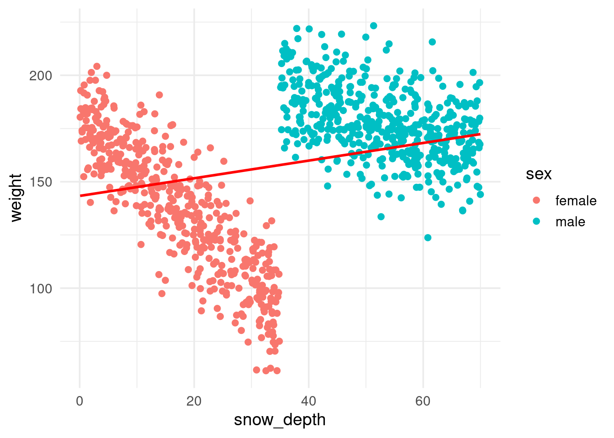
Pooled: snow depth looks positively associated with weight — even though both sexes lose weight with more snow.
Why? Sex is a confounder
- Within each sex: more snow → lower weight (true negative relationship)
- Between sexes: males see more snow and are heavier (confounded)
- Pooled data compares heavy, high-snow males to light, low-snow females → spurious positive trend
ggplot(bighorn_population) +
geom_point(aes(x = snow_depth, y = weight, color = sex)) +
geom_smooth(aes(x = snow_depth, y = weight), method = "lm", se = FALSE, color = "red") +
geom_smooth(aes(x = snow_depth, y = weight, color = sex), method = "lm", se = FALSE)🧪 Exercise 1
Using bighorn_population:
- Fit
weight ~ sex * snow_depthwithglmmTMB(). Call itmod_mass_true. - From the summary, identify which coefficient represents the male slope of snow depth. (Hint: it’s not printed directly — you have to add two rows together.)
- In one sentence, explain why a naive
weight ~ snow_depthmodel (ignoring sex) would mislead a manager trying to understand the effect of a harsh winter. Can you think of an example of such a situation in your own field or research?
(~5 minutes — discuss with a neighbor)
Sampling from the population
In practice we can’t measure everyone. Two sampling scenarios:
- Scenario 1: balanced trap, 50 males / 50 females
- Scenario 2: biased trap, 80 males / 20 females
n_individuals <- 100
bighorn_mass_1 <- bighorn_population |>
group_by(sex) |>
slice_sample(n = n_individuals / 2, replace = FALSE) |>
ungroup()
mod_mass_1 <- glmmTMB(weight ~ sex * snow_depth,
data = bighorn_mass_1, family = gaussian())
summary(mod_mass_1)$coefficients$cond Estimate Std. Error z value Pr(>|z|)
(Intercept) 179.711531 3.4913367 51.473560 0.000000e+00
sexmale 39.011436 11.0092824 3.543504 3.948474e-04
snow_depth -2.495525 0.1717861 -14.526933 8.180169e-48
sexmale:snow_depth 1.686797 0.2685643 6.280794 3.368472e-10
attr(,"ddf")
[1] "asymptotic"Reading the coefficients:
- Intercept: female weight at snow_depth = 0
- sexmale: male − female intercept difference
- snow_depth: female slope
- sexmale:snow_depth: male − female slope difference
Useful for hypothesis tests, not directly interpretable for “what’s the effect for males?” — that’s what marginaleffects is for.
Q1: Do sexes differ in spring mass?
predictions(mod_mass_1, by = "sex")
sex Estimate Std. Error z Pr(>|z|) S 2.5 % 97.5 %
female 137 1.88 73.0 <0.001 Inf 133 141
male 178 1.88 95.1 <0.001 Inf 175 182
Type: responsepredictions(mod_mass_1, by = "sex") |>
hypotheses(hypothesis = "b1 - b2 = 0")
Hypothesis Estimate Std. Error z Pr(>|z|) S 2.5 % 97.5 %
b1-b2=0 -41.5 2.65 -15.7 <0.001 181.2 -46.7 -36.3This is a marginal prediction: the model-implied mean for each sex, averaged over the observed snow-depth distribution in the sample.
Q2: Does snow depth affect mass equally by sex?
slopes(mod_mass_1, variables = "snow_depth", by = "sex", vcov = TRUE) |>
ggplot(aes(x = estimate, xmax = conf.high, xmin = conf.low, y = sex, color = sex)) +
geom_pointrange(size = 1) +
geom_vline(xintercept = female_loss, color = "red") +
geom_vline(xintercept = male_loss, color = "blue") +
theme(legend.position = "none")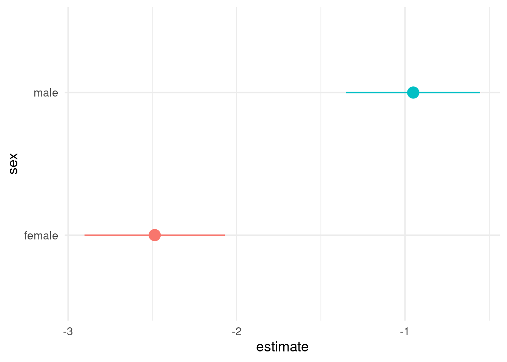
slopes(mod_mass_1, variables = "snow_depth", by = "sex", vcov = TRUE) |>
hypotheses(hypothesis = "b1 - b2 = 0")
Hypothesis Estimate Std. Error z Pr(>|z|) S 2.5 % 97.5 %
b1-b2=0 -1.69 0.269 -6.28 <0.001 31.5 -2.21 -1.16Q3: What’s the population-average slope?
avg_slopes() computes the slope for every observation, then averages:
avg_slopes(mod_mass_1, variables = "snow_depth", vcov = TRUE)
Estimate Std. Error z Pr(>|z|) S 2.5 % 97.5 %
-1.65 0.134 -12.3 <0.001 113.1 -1.92 -1.39
Term: snow_depth
Type: response
Comparison: dY/dXmean(c(male_loss, female_loss)) # true simulated average[1] -1.65Marginal vs conditional, visualized
avg_pred_mass_1 <- avg_predictions(mod_mass_1, variables = "snow_depth")
pred_sex_mass_1 <- predictions(mod_mass_1, newdata = bighorn_mass_1)
ggplot() +
geom_ribbon(data = avg_pred_mass_1,
aes(x = snow_depth, ymin = conf.low, ymax = conf.high),
color = "lightgreen", fill = "lightgreen", alpha = 0.4) +
geom_line(data = avg_pred_mass_1, aes(x = snow_depth, y = estimate),
color = "lightgreen") +
geom_ribbon(data = pred_sex_mass_1,
aes(x = snow_depth, ymin = conf.low, ymax = conf.high, color = sex, fill = sex),
alpha = 0.8) +
geom_line(data = pred_sex_mass_1, aes(x = snow_depth, y = estimate, color = sex)) +
geom_point(data = bighorn_mass_1, aes(y = weight, x = snow_depth, color = sex)) +
guides(alpha = "none", fill = "none") +
labs(title = "Green = marginal; red/blue = conditional (by sex)") +
coord_cartesian(ylim = c(50, 220))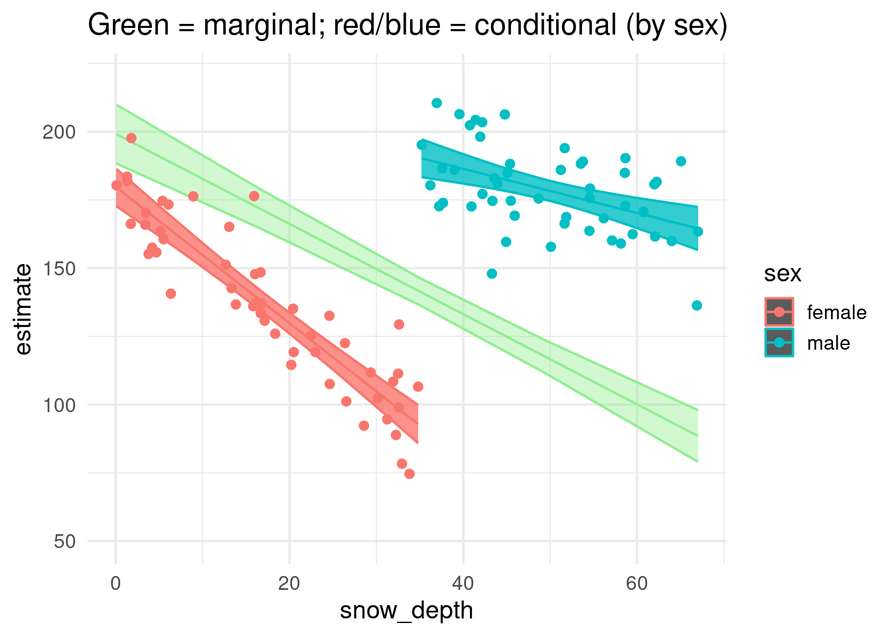
Scenario 2: biased sampling (80% male)
bighorn_mass_2 <- bind_rows(
bighorn_population |> filter(sex == "male") |> slice_sample(n = 80),
bighorn_population |> filter(sex == "female") |> slice_sample(n = 20)
)
mod_mass_2 <- glmmTMB(weight ~ sex * snow_depth, data = bighorn_mass_2, family = gaussian())
summary(mod_mass_2) Family: gaussian ( identity )
Formula: weight ~ sex * snow_depth
Data: bighorn_mass_2
AIC BIC logLik -2*log(L) df.resid
845.8 858.9 -417.9 835.8 95
Dispersion estimate for gaussian family (sigma^2): 250
Conditional model:
Estimate Std. Error z value Pr(>|z|)
(Intercept) 182.7351 7.5600 24.171 < 2e-16 ***
sexmale 35.8867 12.7414 2.817 0.00485 **
snow_depth -2.5263 0.3534 -7.149 8.76e-13 ***
sexmale:snow_depth 1.7521 0.4027 4.351 1.36e-05 ***
---
Signif. codes: 0 '***' 0.001 '**' 0.01 '*' 0.05 '.' 0.1 ' ' 1avg_slopes(mod_mass_2, variables = "snow_depth", vcov = TRUE)
Estimate Std. Error z Pr(>|z|) S 2.5 % 97.5 %
-1.12 0.17 -6.62 <0.001 34.7 -1.46 -0.792
Term: snow_depth
Type: response
Comparison: dY/dXConditional (by-sex) slopes stay close to truth. But the marginal slope is biased toward the overrepresented, weaker-effect sex (males).
Correcting for known sampling bias
If we know the true population sex ratio (50:50), we can average over a balanced newdata grid instead of our biased sample.
newdata_balanced <- bighorn_mass_2 |>
group_by(sex) |>
reframe(snow_depth = seq(min(snow_depth), max(snow_depth), length.out = 50)) |>
ungroup()🧪 Exercise 2
Using the model that was fit to the entire population and the one with a biased sample, use the avg_predictions() function along with a balanced and an unbalanced prediction grid to create a plot comparing the marginal predictions between the true population, biased population predictions, and corrected population predictions. There should be three trend lines.
(~15 minutes)
Part 1 takeaways
- Interactions → conditional effects that depend on other variables
- Simpson’s Paradox is a real risk when pooling across confounded groups
- Marginal ≠ conditional; both are valid but answer different questions
- Raw model coefficients rarely equal your research quantity of interest — use
marginaleffects - Marginal effects inherit your sample’s covariate distribution unless you override it with
newdata
Part 2 — Numerical × Numerical Interactions
Two numerical predictors
With two continuous predictors, an interaction means: the slope of one predictor changes as the other predictor changes — not a separate slope per group, but a sliding one.
A raw coefficient is only “the slope when the other predictor equals zero” — meaningful only if zero is a meaningful value. This motivates centering predictors on their mean, so the intercept and main-effect coefficients describe average conditions.
Case study: petal length
Simulated flowers; petal length as a function of temperature and rain, with an interaction. Predictors are mean-centered: the intercept becomes the predicted response at average conditions rather than at (biologically meaningless) zero temperature/rain.
n_flowers <- 200
temperature <- rnorm(n_flowers, mean = 10, sd = 15)
rain <- rgamma(n_flowers, shape = 2)
avg_petal_length <- 25.6; sd_petal_length <- 4.5
temperature_effect <- 0.4; rain_effect <- 0.9; interaction_effect <- 0.2
flower_measurements_1 <- tibble(
temp_centered = temperature - mean(temperature),
rain_centered = rain - mean(rain),
petal_length = rnorm(n_flowers,
mean = avg_petal_length +
temperature_effect * temp_centered +
rain_effect * rain_centered +
interaction_effect * temp_centered * rain_centered,
sd = sd_petal_length)
)
mod_flower_1 <- glmmTMB(petal_length ~ temp_centered * rain_centered,
data = flower_measurements_1)
summary(mod_flower_1)$coefficients$cond Estimate Std. Error z value Pr(>|z|)
(Intercept) 24.7315526 0.34191019 72.333477 0.000000e+00
temp_centered 0.4441477 0.02209133 20.105064 6.663435e-90
rain_centered 1.0517379 0.26351075 3.991253 6.572525e-05
temp_centered:rain_centered 0.2181736 0.01616323 13.498145 1.603630e-41
attr(,"ddf")
[1] "asymptotic"Every term has a small p-value — but what do these numbers mean for our research question? Time to unpack them.
Slope of one predictor at a single value of the other
# Effect of temperature when rain_centered = 0 (i.e., average rain)
slopes(mod_flower_1, newdata = datagrid(rain_centered = 0),
variables = "temp_centered")
rain_centered Estimate Std. Error z Pr(>|z|) S 2.5 % 97.5 %
0 0.444 0.0221 20.1 <0.001 296.2 0.401 0.487
Term: temp_centered
Type: response
Comparison: dY/dXThis matches the temp_centered coefficient directly — because rain is centered, “at rain = 0” means “at average rain.”
Slope across the range of the moderator
slopes_by_temp <- slopes(mod_flower_1,
newdata = datagrid(temp_centered = seq(min(flower_measurements_1$temp_centered),
max(flower_measurements_1$temp_centered), length.out = 30)),
variables = "rain_centered", by = "temp_centered")
trend_slope_temp <- coef(lm(estimate ~ temp_centered, data = slopes_by_temp))[["temp_centered"]]
slopes_by_temp |>
ggplot() +
geom_hline(yintercept = 0, color = "blue", linetype = 2) +
geom_ribbon(aes(x = temp_centered + mean(temperature), ymin = conf.low, ymax = conf.high),
alpha = 0.4, fill = "lightgrey") +
geom_line(aes(x = temp_centered + mean(temperature), y = estimate)) +
annotate("text", x = -Inf, y = Inf, hjust = -0.2, vjust = 1.5,
label = paste0("slope = ", round(trend_slope_temp, 3))) +
labs(y = "Effect of rain on petal length", x = "Temperature values")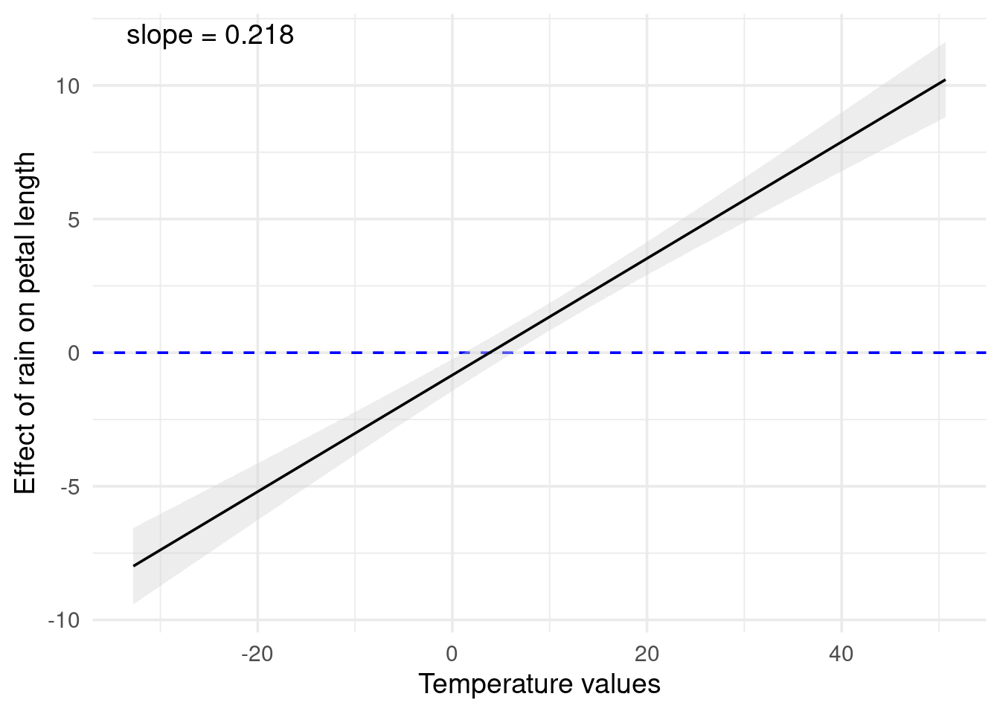
The interaction coefficient is exactly the slope of this line — how much the effect of rain changes per unit of temperature.
Visualizing predictions at chosen moderator values
Common choice: the five-number summary of the moderator.
predictions(mod_flower_1,
newdata = datagrid(
temp_centered = seq(min(flower_measurements_1$temp_centered),
max(flower_measurements_1$temp_centered), length.out = 30),
rain_centered = fivenum
)) |>
as_tibble() |>
mutate(rain = round(rain_centered + mean(rain), 2)) |>
ggplot() +
geom_line(aes(y = estimate, x = temp_centered + mean(temperature), color = as.factor(rain))) +
geom_ribbon(aes(ymin = conf.low, ymax = conf.high,
x = temp_centered + mean(temperature), fill = as.factor(rain)), alpha = 0.2) +
labs(y = "Predicted petal length", x = "Temperature", color = "Rain", fill = "Rain")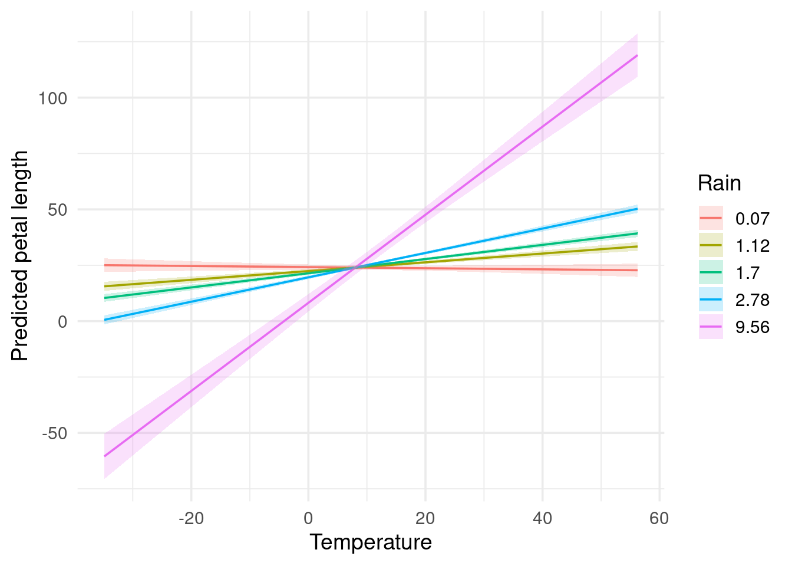
Response surfaces — use with caution
predictions(mod_flower_1,
newdata = datagrid(
temp_centered = seq(min(flower_measurements_1$temp_centered),
max(flower_measurements_1$temp_centered), length.out = 30),
rain_centered = seq(min(flower_measurements_1$rain_centered),
max(flower_measurements_1$rain_centered), length.out = 30)
)) |>
as_tibble() |>
mutate(rain = rain_centered + mean(rain), temp = temp_centered + mean(temperature)) |>
ggplot(aes(x = rain, y = temp, z = estimate)) +
stat_contour_filled() +
labs(x = "Rain", y = "Temperature", fill = "Predicted petal length")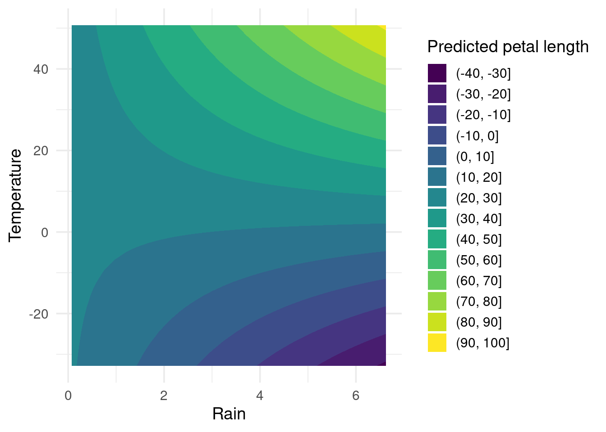
Contour bins are arbitrary and hide uncertainty — good for exploration, risky for publication-quality inference. Prefer line-and-ribbon plots when you can.
🧪 Exercise 3
Using mod_flower_1:
- Compute the slope of temperature across the observed range of rain (mirror the rain-across-temperature plot above).
- At what value of rain does the temperature effect become non-significant (CI crosses zero), if at all?
- Rewrite the research question this model could answer as a single sentence, identifying which variable is the exposure and which is the moderator.
(~10 minutes)
Interactions beyond the mean: distributional regression
Interactions don’t have to act only on the average response. glmmTMB’s dispformula lets predictors affect the standard deviation too — useful when variance itself is ecologically meaningful (e.g., reduced trait variance under stress).
log_sd_intercept <- log(sd_petal_length)
log_sd_temp_slope <- 0.03
flower_measurements_2 <- tibble(
temp_centered = temperature - mean(temperature),
rain_centered = rain - mean(rain),
petal_length = rnorm(n_flowers,
mean = avg_petal_length + temperature_effect * temp_centered,
sd = exp(log_sd_intercept + log_sd_temp_slope * temp_centered))
)ggplot(flower_measurements_2, aes(x = temp_centered + mean(temperature), y = petal_length)) +
geom_smooth(method = "lm", color = "red", se = FALSE) +
geom_point() +
labs(x = "Temperature", y = "Observed petal length")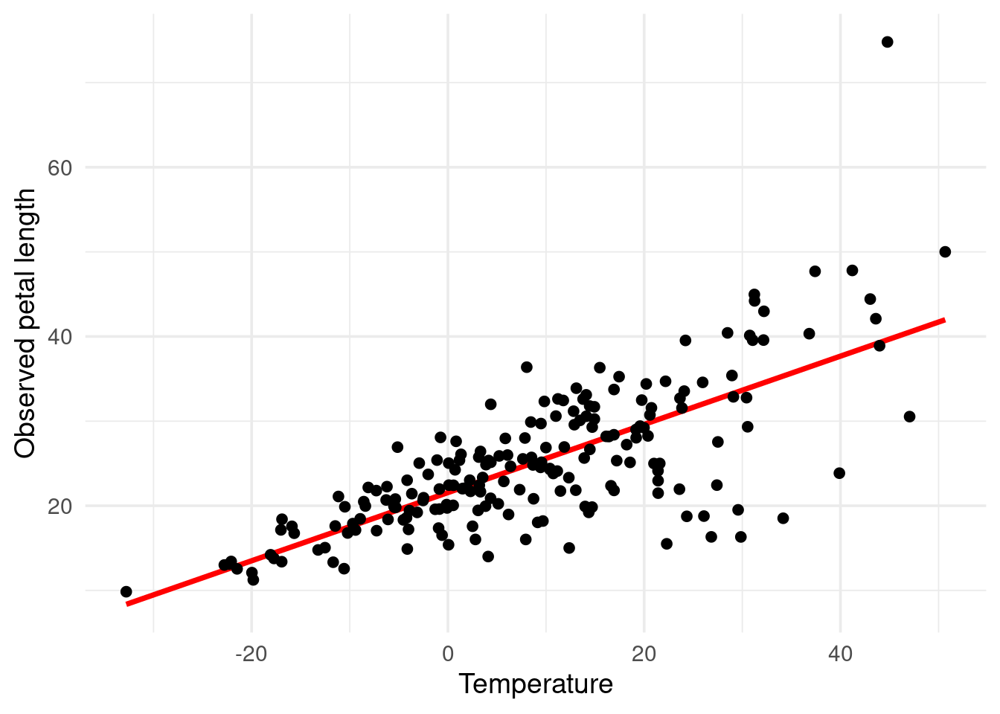
mod_flower_2 <- glmmTMB(petal_length ~ temp_centered,
dispformula = ~ temp_centered,
data = flower_measurements_2)Checking the dispersion model
pred_sd_temp <- predictions(mod_flower_2, newdata = flower_measurements_2, type = "disp") |>
as_tibble()
true_sd_temp <- flower_measurements_2 |>
mutate(true_sd = exp(log_sd_intercept + log_sd_temp_slope * temp_centered))
ggplot() +
geom_line(data = true_sd_temp,
aes(x = temp_centered + mean(temperature), y = true_sd, color = "Simulated"),
linetype = "dashed") +
geom_ribbon(data = pred_sd_temp,
aes(ymin = conf.low, ymax = conf.high, x = temp_centered + mean(temperature)),
fill = "red", alpha = 0.3) +
geom_line(data = pred_sd_temp,
aes(x = temp_centered + mean(temperature), y = estimate, color = "Estimated")) +
scale_color_manual(values = c("Simulated" = "darkgreen", "Estimated" = "red"), name = "Standard deviation") +
labs(x = "Temperature", y = "Standard deviation")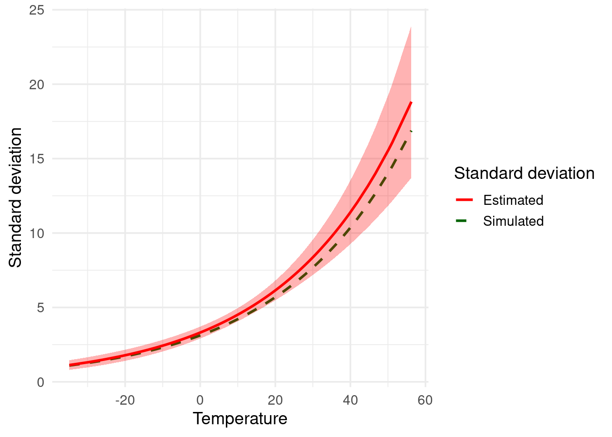
type = "disp" retrieves predictions/slopes for the dispersion sub-model, exactly as type = "conditional" does for the mean.
Simulating and fitting interactions on the standard deviation
log_sd_rain_slope <- 0.02
log_sd_interaction_effect <- 0.005
flower_measurements_3 <- tibble(
temp_centered = temperature - mean(temperature),
rain_centered = rain - mean(rain),
petal_length = rnorm(
n = n_flowers,
mean = avg_petal_length +
temperature_effect * temp_centered +
rain_effect * rain_centered,
sd = exp(log_sd_intercept +
log_sd_temp_slope * temp_centered +
log_sd_rain_slope * rain_centered +
log_sd_interaction_effect * temp_centered * rain_centered))
)
mod_flower_measurements_3 <- glmmTMB(petal_length ~ temp_centered + rain_centered,
dispformula = ~ temp_centered + rain_centered + temp_centered * rain_centered,
data = flower_measurements_3)We can interpret the interactive effects of rain and temperature on the standard deviation of petal length in the same way that we would for the average (see the Numerical x Numerical Interactions tutorial for worked examples). Another way to communicate the results: since the two parameters of the Normal distribution act together to generate the observations, we can predict new distributions of observations for different predictor values.
Predicting new observations
predicted_observations <- predictions(mod_flower_measurements_3,
newdata = datagrid(
temp_centered = fivenum,
rain_centered = fivenum
),
type = "conditional") |>
as_tibble() |>
select(temp_centered, rain_centered, estimate) |>
rename(mu = estimate) |>
left_join(predictions(mod_flower_measurements_3,
newdata = datagrid(
temp_centered = fivenum,
rain_centered = fivenum
),
type = "disp") |>
as_tibble() |>
select(temp_centered, rain_centered, estimate) |>
rename(sd = estimate)) |>
rowwise() |>
mutate(temp_centered = round(temp_centered),
rain_centered = round(rain_centered),
pred_obs = dist_normal(mu = mu, sd = sd))
# Build facet labels dynamically from the actual rounded temp_centered values
# (hardcoding them would silently show NA facet labels if the simulated data changes)
temp_labels <- setNames(
paste0("temp = ", sort(unique(predicted_observations$temp_centered))),
sort(unique(predicted_observations$temp_centered))
)
ggplot(predicted_observations, aes(xdist = pred_obs, color = as.factor(rain_centered))) +
stat_slab(fill = NA, normalize = "xy") +
scale_color_brewer(palette = "Accent") +
facet_wrap(~ as.factor(temp_centered), scales = "free", labeller = as_labeller(temp_labels)) +
labs(x = "Predicted petal length", color = "Rain (centered)") +
theme(axis.text.y = element_blank(), axis.title.y = element_blank())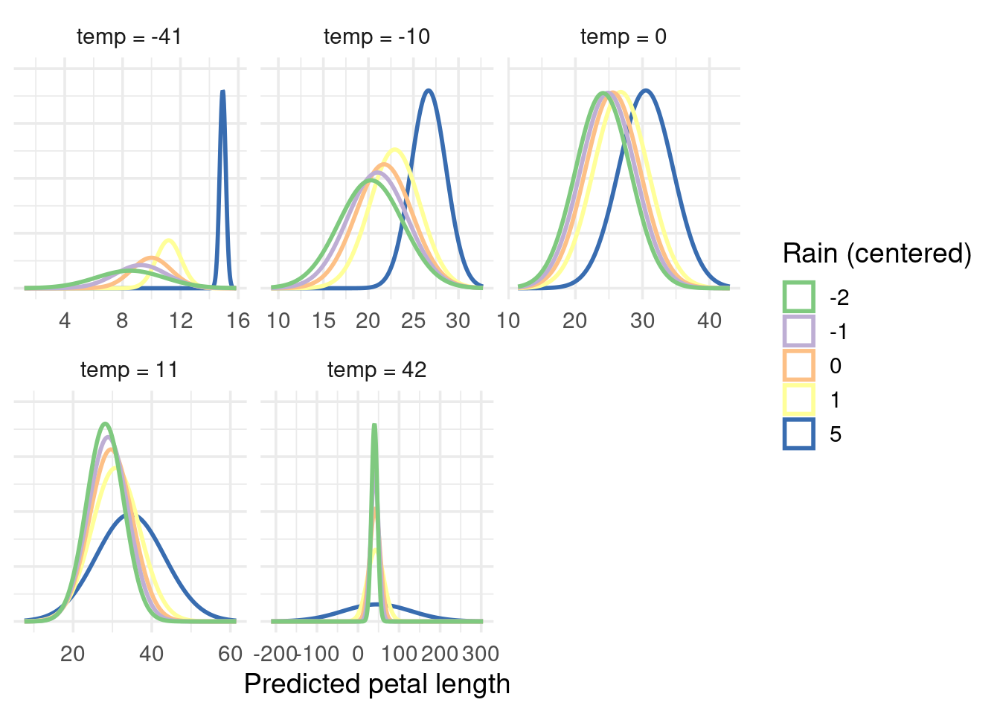
Part 2 takeaways
- With two numerical predictors, the interaction coefficient is the rate of change of one slope per unit of the other — not a separate slope for each group
- Centering predictors makes main-effect coefficients interpretable as “effect at average conditions”
- Plot slopes across the moderator’s range, not just the coefficient table
- Five-number-summary prediction plots are usually more honest than response surfaces (they retain uncertainty)
- Interactions can act on variance, not just the mean, via distributional regression (
dispformula)
Part 3 — Link Functions Create Implicit Interactions
So far, every interaction we’ve seen was written explicitly into the model formula (X1 * X2). Non-linear link functions (logit, log, …) introduce a second, implicit source of interaction: even a model with no interaction term at all can show predictors whose response-scale effect depends on the values of other predictors. This happens because the link function bends a straight line (on the link scale) into a curve (on the response scale) — and how much a fixed push on the link scale moves the response depends on where you are on that curve.
Case study: species occurrence
Simulated presence/absence of a species across 200 plots, as a function of tree cover, rain, and temperature — no interaction terms, fit with a binomial GLM (logit link).
n_plots <- 200
tree_cover <- dist_mixture(dist_beta(4, 0.8), dist_beta(0.8, 4), weights = c(0.5, 0.5))
avg_yearly_rain <- dist_gamma(shape = 3, rate = 0.7)
avg_yearly_temp <- dist_normal(mu = 20, sd = 10)
occurence_intercept <- 0.047
occurence_tree_effect <- 0.45
occurence_rain_effect <- 0.01
occurence_temp_effect <- 0.01
occ_data <- tibble(
tree_cov = generate(tree_cover, n_plots),
rain = generate(avg_yearly_rain, n_plots),
temp = generate(avg_yearly_temp, n_plots)
) |>
unnest(everything()) |>
mutate(occurence = rbinom(n_plots, size = 1,
prob = occurence_intercept +
occurence_tree_effect * tree_cov +
occurence_rain_effect * rain +
occurence_temp_effect * temp))Fit the model
mod_1 <- glmmTMB(occurence ~ tree_cov + rain + temp, family = binomial(link = "logit"), data = occ_data)
summary(mod_1)$coefficients$cond Estimate Std. Error z value Pr(>|z|)
(Intercept) -1.69327695 0.50024494 -3.3848957 7.120530e-04
tree_cov 1.98151874 0.43421560 4.5634443 5.032116e-06
rain -0.02254920 0.06512181 -0.3462619 7.291459e-01
temp 0.04989717 0.01677791 2.9739804 2.939638e-03
attr(,"ddf")
[1] "asymptotic"We simulated the effect of tree cover to be 0.45 on the probability scale, but the model reports ~1.87. That’s not an error — it’s reporting the coefficient on the log-odds scale, not the probability scale.
The logit link bends a line into an S-shape
tibble(log_odds = seq(-6, 6, length.out = 400)) |>
mutate(probability = plogis(log_odds)) |>
ggplot(aes(x = log_odds, y = probability)) +
geom_line() +
labs(x = "log-odds scale (what the coefficient describes)",
y = "probability scale (what we care about)")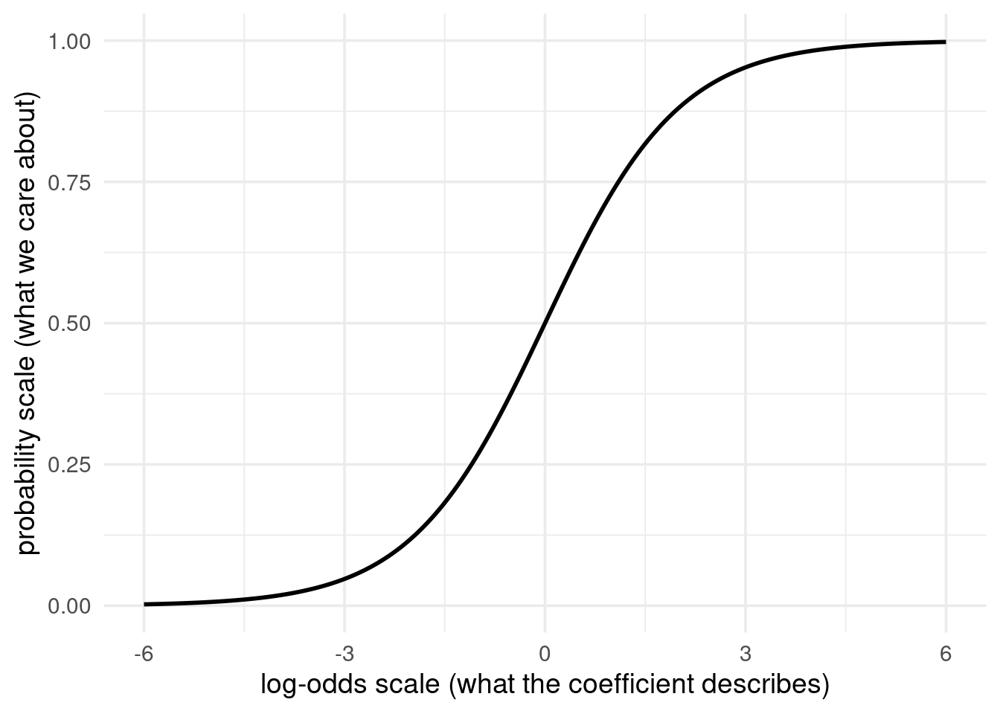
Near the middle (p ≈ 0.5) the curve is steep: a small log-odds push moves probability a lot. Near the ends (p ≈ 0 or 1) the curve flattens: the same push barely moves probability. No manual derivative needed — marginaleffects converts automatically to the scale we actually care about.
marginaleffects does this for us
slopes(mod_1, variables = "tree_cov",
newdata = datagrid(temp = mean(occ_data$temp), rain = mean(occ_data$rain)))
temp rain Estimate Std. Error z Pr(>|z|) S 2.5 % 97.5 %
19.5 4.22 0.491 0.107 4.57 <0.001 17.6 0.28 0.702
Term: tree_cov
Type: response
Comparison: dY/dXslopes() in this case asks: “at these covariate values, how much does predicted probability change for a small increase in tree cover?” — a probability-scale answer, directly comparable to how we simulated the data.
The implicit interaction, visualized
slopes(mod_1, variables = "tree_cov", newdata = datagrid(temp = fivenum, rain = fivenum)) |>
ggplot() +
geom_pointrange(aes(x = estimate, xmin = conf.low, xmax = conf.high, y = 1)) +
geom_vline(xintercept = occurence_tree_effect, alpha = .8) +
facet_grid(rain ~ temp) +
theme(axis.title.y = element_blank(), axis.text.y = element_blank())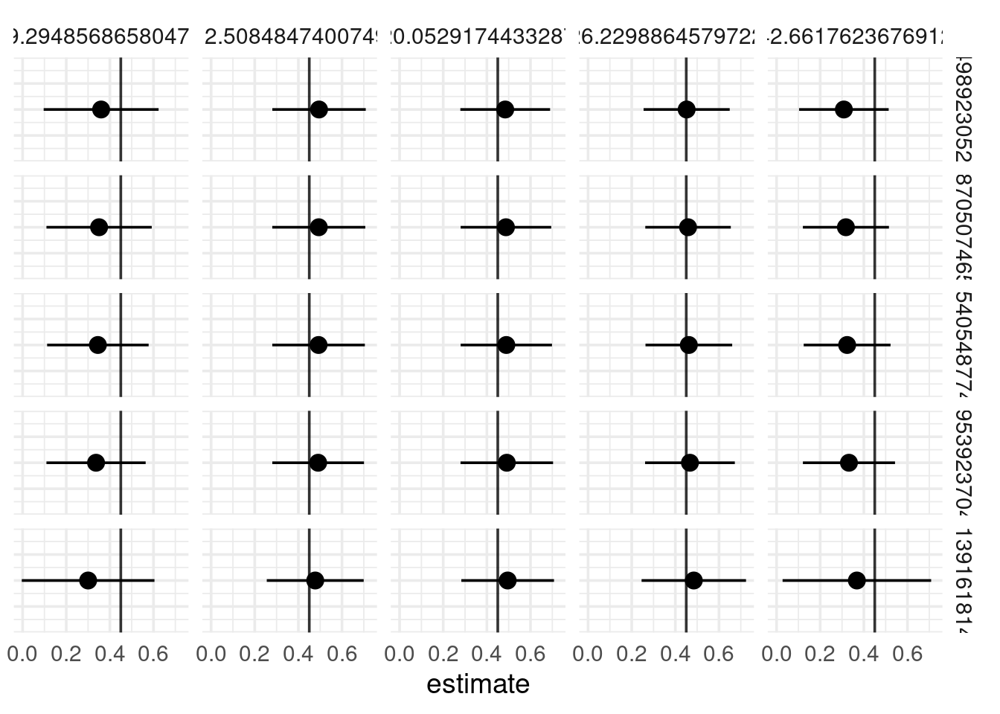
Because the amount of “bending” depends on where you are on the S-curve, tree cover’s probability-scale effect depends on rain and temp too — even though we never told the model to include that interaction. Whether an interaction “exists” can depend on which scale you look at (additive/probability vs. multiplicative/log-odds) — see Spake et al. (2023) for more on this “Type-D” error.
Response vs. link scale, across each moderator
slopes_by_temp_response <- slopes(mod_1,
newdata = datagrid(temp = seq(min(occ_data$temp), max(occ_data$temp), length.out = 30),
rain = mean(occ_data$rain)),
variables = "tree_cov", by = "temp", type = "response") |> as_tibble()
slopes_by_temp_link <- slopes(mod_1,
newdata = datagrid(temp = seq(min(occ_data$temp), max(occ_data$temp), length.out = 30),
rain = mean(occ_data$rain)),
variables = "tree_cov", by = "temp", type = "link") |> as_tibble()
slopes_by_rain_response <- slopes(mod_1,
newdata = datagrid(rain = seq(min(occ_data$rain), max(occ_data$rain), length.out = 30),
temp = mean(occ_data$temp)),
variables = "tree_cov", by = "rain", type = "response") |> as_tibble()
slopes_by_rain_link <- slopes(mod_1,
newdata = datagrid(rain = seq(min(occ_data$rain), max(occ_data$rain), length.out = 30),
temp = mean(occ_data$temp)),
variables = "tree_cov", by = "rain", type = "link") |> as_tibble()
plot_slope <- function(data, x, y_lab, scale_title) {
ggplot(data) +
geom_hline(yintercept = 0, color = "blue", linetype = 2) +
geom_ribbon(aes(x = .data[[x]], ymin = conf.low, ymax = conf.high), alpha = 0.4, fill = "lightgrey") +
geom_line(aes(x = .data[[x]], y = estimate)) +
labs(y = y_lab, x = x, title = scale_title)
}
(plot_slope(slopes_by_temp_response, "temp", "Slope of tree_cov\n(probability scale)", "Response scale") +
plot_slope(slopes_by_temp_link, "temp", "Slope of tree_cov\n(log-odds scale)", "Link scale")) /
(plot_slope(slopes_by_rain_response, "rain", "Slope of tree_cov\n(probability scale)", "Response scale") +
plot_slope(slopes_by_rain_link, "rain", "Slope of tree_cov\n(log-odds scale)", "Link scale"))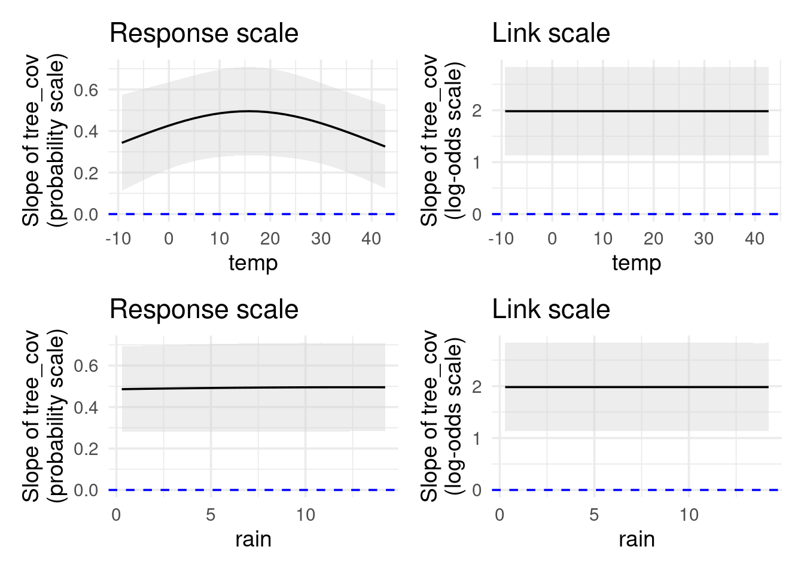
Link (log-odds) scale: the slope of tree_cov is flat (~1.87) across both moderators — exactly as it should be, since mod_1’s formula has no interaction term at all. Response (probability) scale: the slope visibly curves with temp (and more weakly with rain) — the implicit interaction made concrete, purely from the logit link’s curvature. With three predictors, a focal variable’s slope can no longer be shown across “the” moderator in one 2D plot — each panel above holds the other remaining predictor fixed at its mean. Alternatives: facet by the third variable, use small multiples at representative (e.g. five-number-summary) values, or report a single avg_slopes() that integrates over the observed distribution instead of fixing it.
The “overall” effect of tree cover
avg_predictions(mod_1, variables = "tree_cov", vcov = TRUE) |>
ggplot() +
geom_ribbon(aes(x = tree_cov, ymin = conf.low, ymax = conf.high), fill = "lightgrey", alpha = 0.4) +
geom_line(aes(x = tree_cov, y = estimate)) +
labs(y = "Predicted occurence")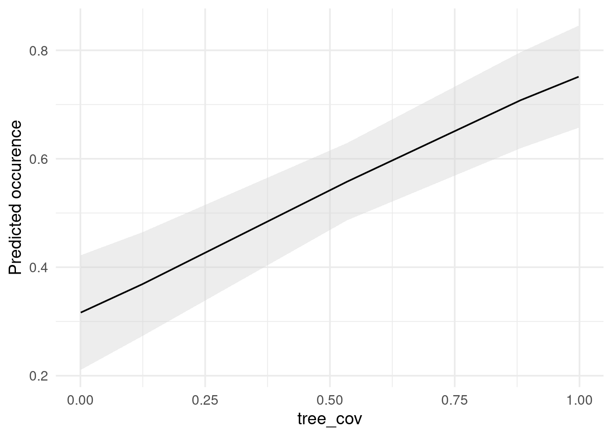
avg_predictions()/avg_slopes() give one number (or curve) per focal value, integrating over rain and temp as observed in the sample — a marginal, “average effect” alternative to picking a single moderator value to condition on.
🧪 Exercise 5
Using mod_1:
- Plot the predicted trend of occurence as a function of tree cover for the unique combinations of the five-number summary of rain and temperature. Hint: use the
predictions()function. - Plot the prediction for the average effect of temperature.
(~20 minutes)
Reviewer 2 wants a table
# Average slopes on the probability scale for all three predictors
slopes_tbl_mod1 <- avg_slopes(mod_1, variables = c("tree_cov", "rain", "temp"), type = "response") |>
as_tibble() |>
select(term, estimate, conf.low, conf.high, p.value) |>
mutate(
across(c(estimate, conf.low, conf.high), ~ round(.x, 3)),
p.value = if_else(p.value < 0.001, "<0.001", as.character(round(p.value, 3)))
) |>
mutate(CI_95 = glue::glue("[{conf.low}, {conf.high}]")) |>
select(Predictor = term, Slope = estimate, `95% CI` = CI_95, `p-value` = p.value)
# Tjur's R2 as an extra row in the same 4-column layout
r2_row <- tibble(
Predictor = "Tjur's R\u00b2",
Slope = as.character(round(r2_tjur(mod_1), 3)),
`95% CI` = "",
`p-value` = ""
)
mod1_tbl <- bind_rows(
slopes_tbl_mod1 |> mutate(across(everything(), as.character)),
r2_row
)
mod1_tbl |>
tt(caption = "Average slopes of occurrence on the probability scale, and Tjur's R2 for mod_1") |>
style_tt(i = nrow(slopes_tbl_mod1) + 1, bold = TRUE, line = "t", line_color = "black", line_width = 0.1)| Predictor | Slope | 95% CI | p-value |
|---|---|---|---|
| rain | -0.005 | [-0.031, 0.022] | 0.729 |
| temp | 0.01 | [0.004, 0.017] | 0.001 |
| tree_cov | 0.415 | [0.275, 0.555] | <0.001 |
| Tjur's R² | 0.155 |
Case study: species abundance
The same phenomenon shows up with count data. Abundance (when present) as a function of the same three predictors, fit with a Poisson GLM (log link), again no interaction terms.
abundance_intercept <- exp(1)
abundance_tree_effect <- 4.5
abundance_rain_effect <- 0.1
abundance_temp_effect <- 0.1
abund_data <- tibble(
tree_cov = generate(tree_cover, n_plots),
rain = generate(avg_yearly_rain, n_plots),
temp = generate(avg_yearly_temp, n_plots)
) |>
unnest(everything()) |>
mutate(abundance = rpois(n_plots, lambda =
abundance_intercept +
abundance_tree_effect * tree_cov +
abundance_rain_effect * rain +
abundance_temp_effect * temp))
mod_2 <- glmmTMB(abundance ~ tree_cov + rain + temp, family = poisson(link = "log"), data = abund_data)
summary(mod_2)$coefficients$cond Estimate Std. Error z value Pr(>|z|)
(Intercept) 1.351588876 0.094920416 14.2391799 5.233765e-46
tree_cov 0.681423047 0.072048327 9.4578608 3.143074e-21
rain 0.008439223 0.010828644 0.7793426 4.357779e-01
temp 0.012663937 0.002590972 4.8877156 1.020127e-06
attr(,"ddf")
[1] "asymptotic"The log-scale tree_cov coefficient is ~0.73, not 4.5 — the same phenomenon as the logit link, just a different curve.
The log link bends a line into a curve
tibble(log_count = seq(-2, 6, length.out = 400)) |>
mutate(count = exp(log_count)) |>
ggplot(aes(x = log_count, y = count)) +
geom_line() +
labs(x = "log scale (what the coefficient describes)", y = "count scale (what we care about)")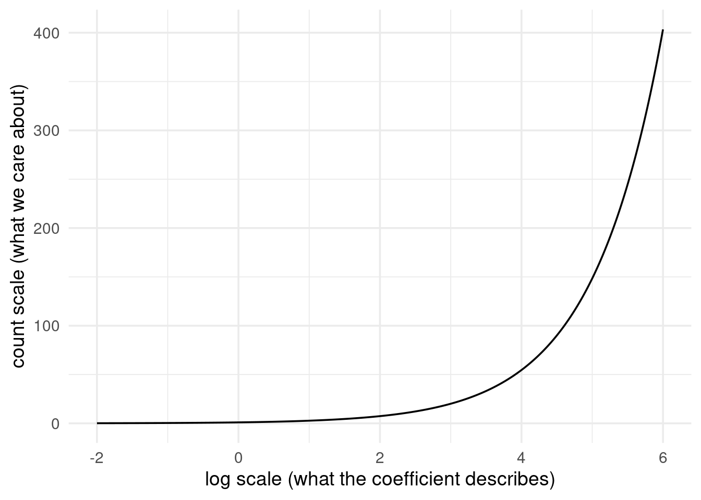
Two ways to report a log-link coefficient
- Rate ratio: a constant multiplicative effect, valid everywhere — “each unit increase in tree cover multiplies expected abundance by this factor, regardless of rain or temp”
- Local slope: an additive, count-scale effect (“this many more individuals”), but only valid near the specific covariate values used
Computing the rate ratio
exp(fixef(mod_2)$cond["tree_cov"]) # rate ratio: ~2.08, i.e. a ~108% increase per unit tree covertree_cov
1.976689 Both describe the same underlying model — pick the one that matches your audience (percent change vs. a concrete headcount).
🧪 Exercise 6
Using mod_2:
- Compute the rate ratio and the local count-scale slope for
temp, holdingrainat its minimum (a “drought” scenario) andtree_covat its mean. - Repeat holding
tree_covat a low vs. a high value (e.g., the 10th and 90th percentiles) — does the rate ratio change? Does the local slope? - Explain, in your own words, why one of these two summaries stays constant across
tree_covand the other doesn’t.
(~7 minutes)
Case study: occurrence and abundance together
In reality, a species first has to be present before we can measure its abundance. A hurdle model combines two sub-models fit jointly:
- A binomial (logit-link) component: does a plot clear the “hurdle” of zero? (occurrence)
- A truncated count component: given it’s non-zero, how many individuals? (abundance when present)
Two ways to interpret: each part separately (what drives occurrence vs. abundance), or combined on the population scale (expected abundance across all plots = P(occurrence) × E[abundance | present]).
A simple hurdle example
# Simple hurdle simulation: abundance_pres = counts if present; occurence = presence;
# abundance_pop = observed count in every plot (zero wherever the species is absent)
simple_pop_data <- tibble(
tree_cov = generate(tree_cover, n_plots)
) |>
unnest(everything()) |>
mutate(abundance_pres = rpois(n_plots, lambda =
abundance_intercept +
abundance_tree_effect * tree_cov
),
occurence = rbinom(n_plots, size = 1,
prob = occurence_intercept +
occurence_tree_effect * tree_cov),
abundance_pop = abundance_pres * occurence)
# Hurdle model: main formula is the (zero-truncated Poisson) abundance-when-present part;
# zi = ~ tree_cov models the probability of a structural zero (absence) with a logit link
mod_hu_simple <- glmmTMB(abundance_pop ~ tree_cov,
zi = ~ tree_cov,
family = truncated_poisson,
data = simple_pop_data)Population vs. present-only predictions
# type = "response": population-scale expected abundance across ALL plots (P(present) x count)
pred_resp_simple <- predictions(mod_hu_simple, type = "response") |> mutate(type = "response")
# type = "zprob": predicted probability of a structural zero (i.e. NOT occurring)
pred_prob_simple <- predictions(mod_hu_simple, type = "zprob")
# type = "conditional": expected abundance given the species is present
pred_cond_simple <- predictions(mod_hu_simple, type = "conditional") |> mutate(type = "conditional")
pred_abun_simple <- bind_rows(pred_resp_simple, pred_cond_simple)
plot_pred_abun_simple <- ggplot(pred_abun_simple) +
geom_ribbon(aes(x = tree_cov, ymin = conf.low, ymax = conf.high, fill = type), alpha = 0.2) +
geom_line(aes(x = tree_cov, y = estimate, color = type)) +
labs(x = "Tree cover", y = "Abundance", color = "Prediction type", fill = "Prediction type")
# zprob is P(structural zero), so 1 - zprob is the occurrence probability
plot_pred_prob_simple <- ggplot(pred_prob_simple) +
geom_ribbon(aes(x = tree_cov, ymin = 1 - conf.high, ymax = 1 - conf.low), fill = "lightgrey", alpha = 0.4) +
geom_line(aes(x = tree_cov, y = 1 - estimate)) +
labs(x = "Tree cover", y = "Occurence probability")
plot_pred_abun_simple / plot_pred_prob_simple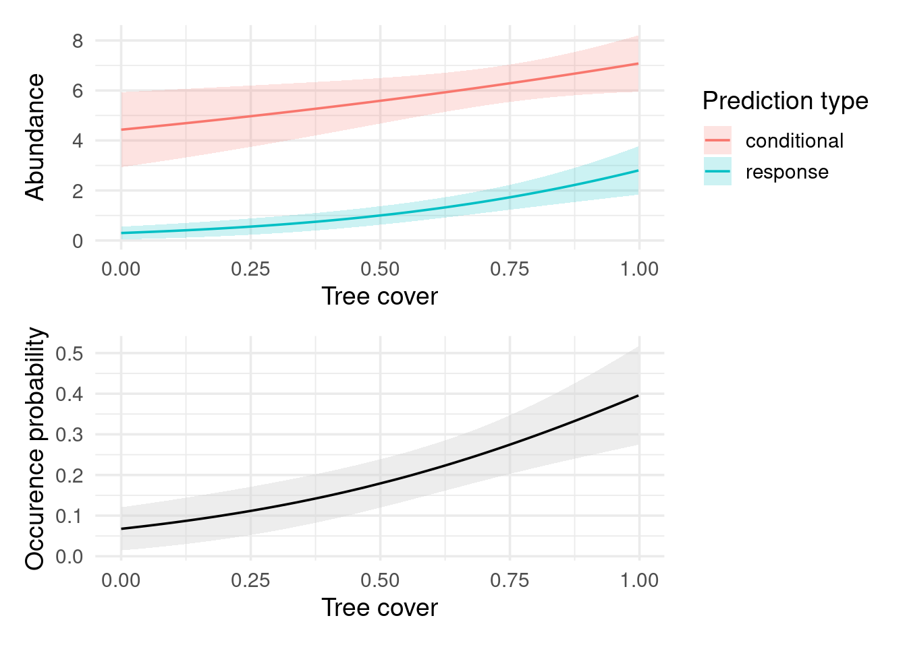
Predicted abundance when present (conditional) is always higher than population-scale abundance (response), since occurrence probability is below 100%. This is an implicit interaction between the model’s two parts: tree cover’s effect on population-scale abundance depends on its effect on both occurrence and abundance-when-present.
Simulating with an explicit interaction
Prey and competitors interact in their effect on abundance (when present); tree cover drives occurrence only. Predictors are simulated through the model’s own inverse link (exp(), plogis()) so they stay in a valid range.
more_plots <- 4000
prey_abun <- dist_poisson(lambda = 6)
competitor_abun <- dist_poisson(lambda = 3)
pop_data <- tibble(
tree_cov = generate(tree_cover, more_plots),
prey = generate(prey_abun, more_plots),
competitors = generate(competitor_abun, more_plots)
) |>
unnest(everything()) |>
mutate(
abundance_pres = rpois(more_plots,
lambda = exp(1 + 0.12 * prey - 0.15 * competitors - 0.045 * prey * competitors)),
occurence = rbinom(more_plots, size = 1, prob = plogis(-2 + 0.45 * tree_cov)),
abundance_pop = abundance_pres * occurence
) |>
mutate(across(c(tree_cov, prey, competitors), ~ (.x - mean(.x)) / sd(.x), .names = "scl_{.col}"))Fitting the hurdle model
mod_hu <- glmmTMB(
abundance_pop ~ scl_prey * scl_competitors,
zi = ~ scl_tree_cov,
family = truncated_poisson,
data = pop_data
)zi = ~ scl_tree_cov: the zero-inflation (occurrence) part. The conditional formula’s scl_prey * scl_competitors is an explicit interaction, layered on top of the log link’s implicit one.
The interaction on the count scale
slopes(mod_hu, variables = "scl_prey",
newdata = datagrid(scl_competitors = seq(min(pop_data$scl_competitors),
max(pop_data$scl_competitors), length.out = 30)),
type = "response") |>
# unscale back to raw competitor counts for an interpretable x-axis
mutate(competitors = scl_competitors * sd(pop_data$competitors) + mean(pop_data$competitors)) |>
ggplot(aes(x = competitors, y = estimate)) +
geom_hline(yintercept = 0, color = "blue", linetype = 2) +
geom_ribbon(aes(ymin = conf.low, ymax = conf.high), alpha = 0.4, fill = "lightgrey") +
geom_line() +
labs(y = "Slope of scl_prey\n(count scale, individuals present)", x = "Competitors",
title = "Count-scale effect of prey availability weakens as competitors increase")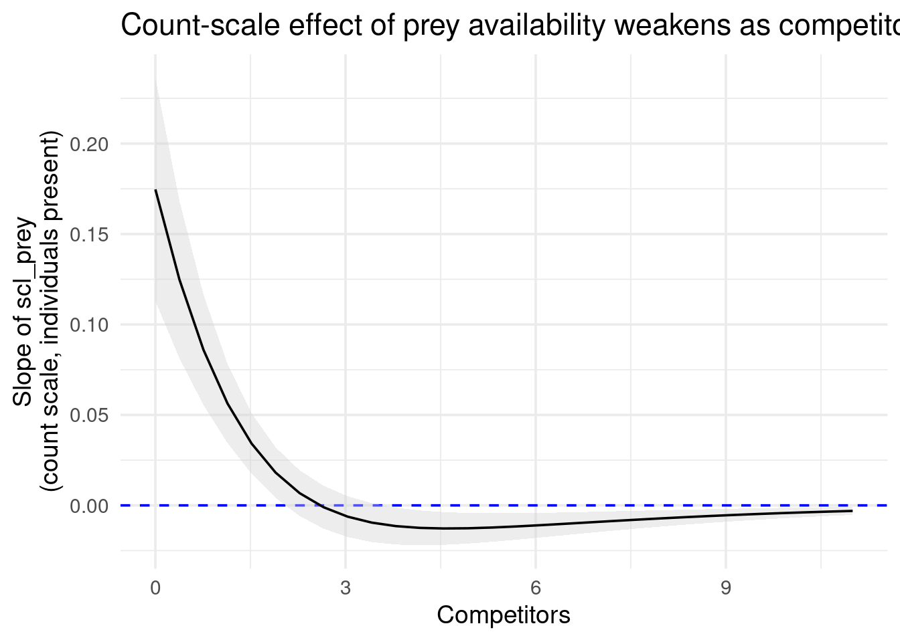
The interaction on the link scale
slopes(mod_hu, variables = "scl_prey",
newdata = datagrid(scl_competitors = seq(min(pop_data$scl_competitors),
max(pop_data$scl_competitors), length.out = 30)),
type = "link") |>
# unscale back to raw competitor counts for an interpretable x-axis
mutate(competitors = scl_competitors * sd(pop_data$competitors) + mean(pop_data$competitors)) |>
ggplot(aes(x = competitors, y = estimate)) +
geom_hline(yintercept = 0, color = "blue", linetype = 2) +
geom_ribbon(aes(ymin = conf.low, ymax = conf.high), alpha = 0.4, fill = "lightgrey") +
geom_line() +
labs(y = "Slope of scl_prey\n(log scale)", x = "Competitors",
title = "Link-scale effect of prey declines linearly with competitors")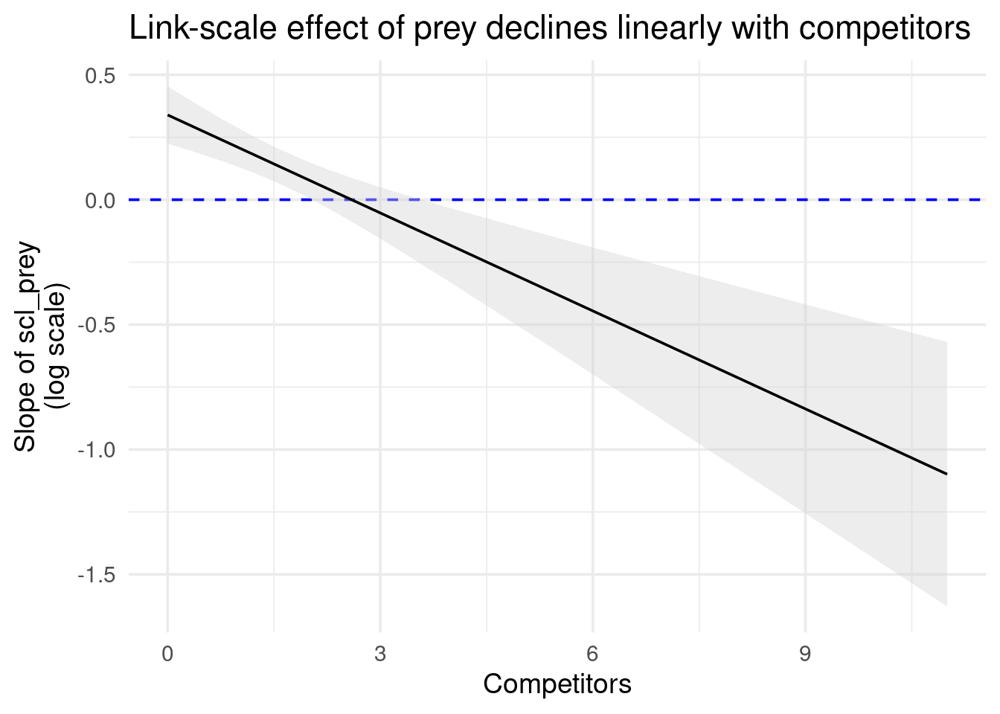
Unlike the count-scale plot, this one is linear in competitors by construction — the model’s formula (scl_prey * scl_competitors) is fit additively on the log scale, so the explicit interaction shows up here as a straight line, with no additional curvature from the log link itself.
Isolating the interaction: rate ratios
To isolate something closer to “the interaction itself,” we move to the rate-ratio scale: for each one-SD increase in competitors, by what factor does the effect of one extra SD of prey get multiplied? That’s exp() of the interaction coefficient, and because it lives on the model’s own additive (log) scale, it doesn’t depend on where competitors are evaluated — unlike the count-scale slope.
rate_ratio_interaction_tbl <- avg_slopes(mod_hu, variables = "scl_prey",
by = "scl_competitors",
newdata = datagrid(scl_competitors = c(-1, 0, 1)),
type = "link") |>
as_tibble() |>
mutate(rate_ratio = exp(estimate), rr_low = exp(conf.low), rr_high = exp(conf.high)) |>
select(scl_competitors, rate_ratio, rr_low, rr_high, p.value) |>
mutate(
across(c(rate_ratio, rr_low, rr_high), ~ round(.x, 3)),
p.value = if_else(p.value < 0.001, "<0.001", as.character(round(p.value, 3)))
) |>
mutate(CI_95 = glue::glue("[{rr_low}, {rr_high}]")) |>
select(`Competitors (scaled)` = scl_competitors, `Rate ratio for scl_prey` = rate_ratio, `95% CI` = CI_95, `p-value` = p.value)
rate_ratio_interaction_tbl |>
tt(caption = "Rate ratio of scl_prey's effect on abundance, evaluated at three levels of scl_competitors")| Competitors (scaled) | Rate ratio for scl_prey | 95% CI | p-value |
|---|---|---|---|
| -1 | 1.194 | [1.111, 1.283] | <0.001 |
| 0 | 0.952 | [0.86, 1.054] | 0.346 |
| 1 | 0.760 | [0.631, 0.914] | 0.004 |
Prey’s rate ratio drops from >1 (increasing abundance) at low competitor density to <1 (decreasing abundance) at high competitor density.
Predicted abundance, by competitor level
predictions(mod_hu,
newdata = datagrid(
scl_prey = seq(min(pop_data$scl_prey), max(pop_data$scl_prey), length.out = 30),
scl_competitors = fivenum
),
type = "conditional"
) |>
mutate(prey = scl_prey * sd(pop_data$prey) + mean(pop_data$prey),
competitors = round(scl_competitors * sd(pop_data$competitors) + mean(pop_data$competitors), 1)) |>
ggplot() +
geom_ribbon(aes(x = prey, ymin = conf.low, ymax = conf.high, fill = as.factor(competitors)), alpha = 0.2) +
geom_line(aes(x = prey, y = estimate, color = as.factor(competitors))) +
labs(y = "Predicted abundance\n(when present)", x = "Prey", color = "Competitors", fill = "Competitors")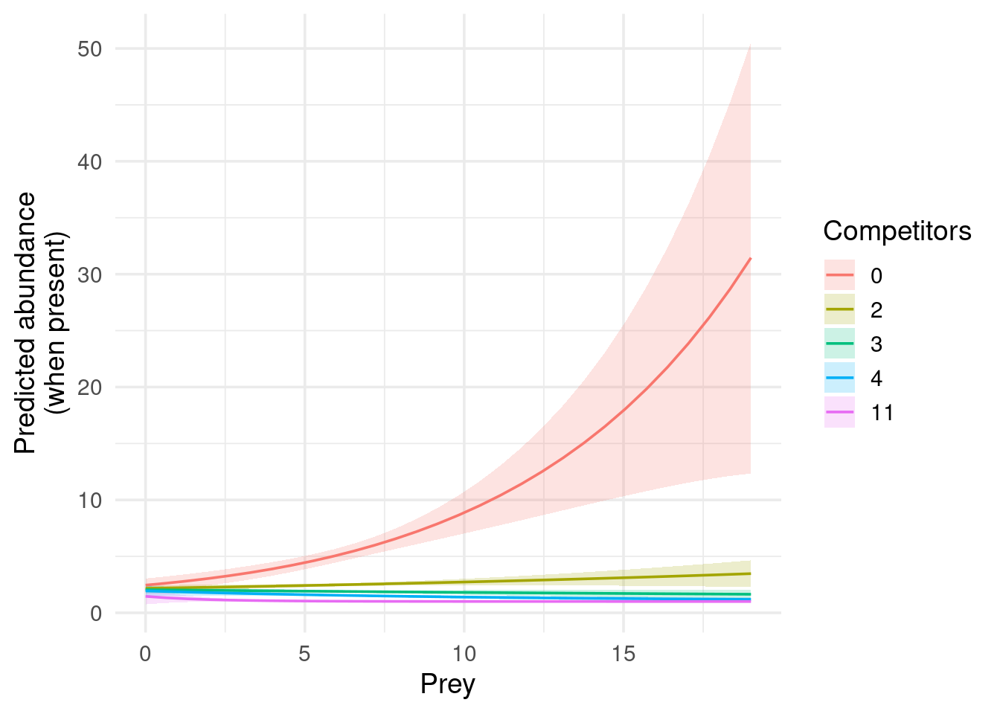
At low competitor density, abundance climbs steeply with prey; by the time competitors are abundant, the prey curve is nearly flat — the same shrinking slope we saw before, now shown as predicted trends rather than slopes.
Population-scale picture: low vs. high tree cover
# Locate the two peaks of tree_cov's bimodal distribution, as scaled values
d <- density(pop_data$tree_cov)
peaks <- d$x[which(diff(sign(diff(d$y))) == -2) + 1]
low_tree_pop <- round(peaks[1], 2)
high_tree_pop <- round(peaks[length(peaks)], 2)
low_tree_pop_scl <- (low_tree_pop - mean(pop_data$tree_cov)) / sd(pop_data$tree_cov)
high_tree_pop_scl <- (high_tree_pop - mean(pop_data$tree_cov)) / sd(pop_data$tree_cov)
predictions(mod_hu,
newdata = datagrid(
scl_prey = seq(min(pop_data$scl_prey), max(pop_data$scl_prey), length.out = 30),
scl_competitors = fivenum,
scl_tree_cov = c(low_tree_pop_scl, high_tree_pop_scl)
),
type = "response"
) |>
mutate(prey = scl_prey * sd(pop_data$prey) + mean(pop_data$prey),
competitors = round(scl_competitors * sd(pop_data$competitors) + mean(pop_data$competitors), 1),
`Tree cover` = if_else(scl_tree_cov == low_tree_pop_scl, "Low tree cover", "High tree cover")) |>
ggplot() +
geom_ribbon(aes(x = prey, ymin = conf.low, ymax = conf.high, fill = as.factor(competitors)), alpha = 0.2) +
geom_line(aes(x = prey, y = estimate, color = as.factor(competitors))) +
facet_wrap(~ `Tree cover`) +
labs(y = "Predicted population abundance", x = "Prey", color = "Competitors", fill = "Competitors")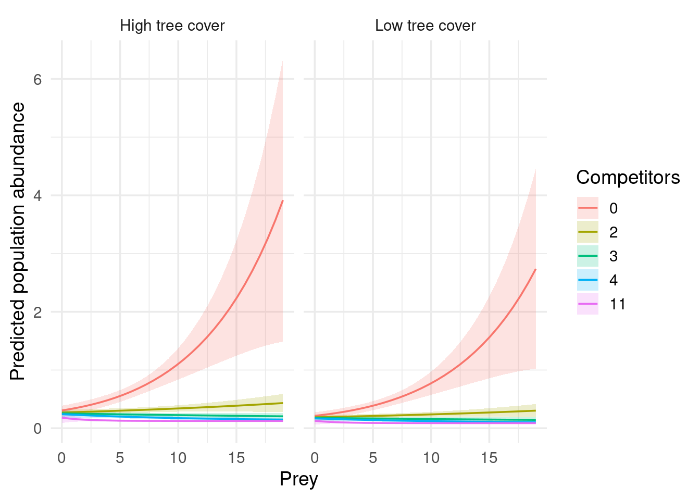
Within each panel, the prey × competitors shape is the same. But the high-tree-cover panel sits above the low-tree-cover panel overall — more plots are occupied there. Tree cover mostly shifts how many plots have the species at all; prey and competitors jointly shape abundance within occupied plots.
A symmetric interaction, viewed from the other predictor
predictions(mod_hu,
newdata = datagrid(
scl_competitors = seq(min(pop_data$scl_competitors), max(pop_data$scl_competitors), length.out = 30),
scl_prey = fivenum
),
type = "conditional"
) |>
mutate(competitors = scl_competitors * sd(pop_data$competitors) + mean(pop_data$competitors),
prey = round(scl_prey * sd(pop_data$prey) + mean(pop_data$prey), 1)) |>
ggplot() +
geom_ribbon(aes(x = competitors, ymin = conf.low, ymax = conf.high, fill = as.factor(prey)), alpha = 0.2) +
geom_line(aes(x = competitors, y = estimate, color = as.factor(prey))) +
labs(y = "Predicted abundance\n(when present)", x = "Competitors", color = "Prey", fill = "Prey")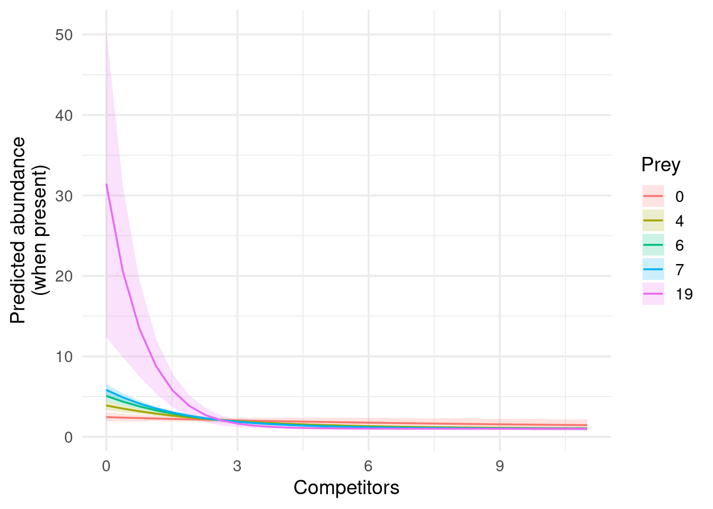
A two-way interaction is mathematically symmetric: scl_prey:scl_competitors is the same coefficient as scl_competitors:scl_prey. This view makes a different point than the prey-on-x-axis plot: regardless of prey availability, enough competitors drive abundance down to roughly the same low floor. Neither plot is “more correct” — reporting only one risks showing half the story (Spake et al. 2023).
Average predictions: one curve per predictor
avg_pred_prey_cond <- avg_predictions(mod_hu,
newdata = datagrid(model = mod_hu,
scl_prey = seq(min(pop_data$scl_prey), max(pop_data$scl_prey), length.out = 30),
grid_type = "counterfactual"),
by = "scl_prey", type = "conditional"
) |>
mutate(prey = scl_prey * sd(pop_data$prey) + mean(pop_data$prey))
avg_pred_comp_cond <- avg_predictions(mod_hu,
newdata = datagrid(model = mod_hu,
scl_competitors = seq(min(pop_data$scl_competitors), max(pop_data$scl_competitors), length.out = 30),
grid_type = "counterfactual"),
by = "scl_competitors", type = "conditional"
) |>
mutate(competitors = scl_competitors * sd(pop_data$competitors) + mean(pop_data$competitors))
p_avg_prey_cond <- avg_pred_prey_cond |>
ggplot() +
geom_ribbon(aes(x = prey, ymin = conf.low, ymax = conf.high), fill = "lightgrey", alpha = 0.4) +
geom_line(aes(x = prey, y = estimate)) +
labs(y = "Average predicted abundance\n(when present)", x = "Prey")
p_avg_comp_cond <- avg_pred_comp_cond |>
ggplot() +
geom_ribbon(aes(x = competitors, ymin = conf.low, ymax = conf.high), fill = "lightgrey", alpha = 0.4) +
geom_line(aes(x = competitors, y = estimate)) +
labs(y = "Average predicted abundance\n(when present)", x = "Competitors")
p_avg_prey_cond + p_avg_comp_cond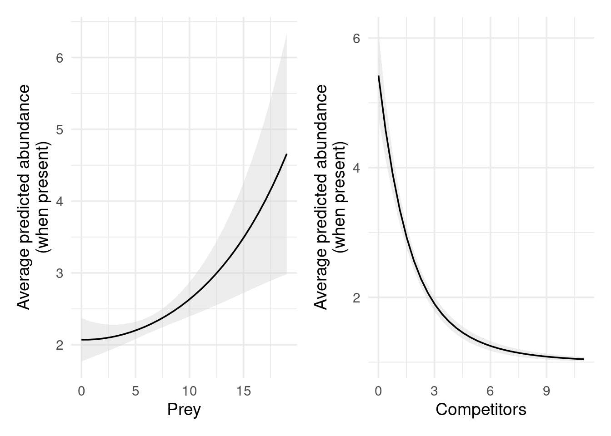
datagrid(..., grid_type = "counterfactual") pairs each focal value with every observed row, then averages — a true average over the sample rather than a slope evaluated at the other predictors’ means. Averaged over all observed competitor density, prey still shows a positive effect; averaged over all observed prey, competitors show a diminishing-harm shape.
Population-scale average, by tree cover
avg_pred_prey_resp <- avg_predictions(mod_hu,
newdata = datagrid(model = mod_hu,
scl_prey = seq(min(pop_data$scl_prey), max(pop_data$scl_prey), length.out = 30),
scl_tree_cov = c(low_tree_pop_scl, high_tree_pop_scl),
grid_type = "counterfactual"),
by = c("scl_prey", "scl_tree_cov"), type = "response"
) |>
mutate(prey = scl_prey * sd(pop_data$prey) + mean(pop_data$prey),
`Tree cover` = if_else(scl_tree_cov == low_tree_pop_scl, "Low tree cover", "High tree cover"))
avg_pred_comp_resp <- avg_predictions(mod_hu,
newdata = datagrid(model = mod_hu,
scl_competitors = seq(min(pop_data$scl_competitors), max(pop_data$scl_competitors), length.out = 30),
scl_tree_cov = c(low_tree_pop_scl, high_tree_pop_scl),
grid_type = "counterfactual"),
by = c("scl_competitors", "scl_tree_cov"), type = "response"
) |>
mutate(competitors = scl_competitors * sd(pop_data$competitors) + mean(pop_data$competitors),
`Tree cover` = if_else(scl_tree_cov == low_tree_pop_scl, "Low tree cover", "High tree cover"))
p_avg_prey_resp <- avg_pred_prey_resp |>
ggplot(aes(x = prey, y = estimate, color = `Tree cover`, fill = `Tree cover`)) +
geom_ribbon(aes(ymin = conf.low, ymax = conf.high), alpha = 0.2, color = NA) +
geom_line() +
labs(y = "Average predicted\npopulation abundance", x = "Prey")
p_avg_comp_resp <- avg_pred_comp_resp |>
ggplot(aes(x = competitors, y = estimate, color = `Tree cover`, fill = `Tree cover`)) +
geom_ribbon(aes(ymin = conf.low, ymax = conf.high), alpha = 0.2, color = NA) +
geom_line() +
labs(y = "Average predicted\npopulation abundance", x = "Competitors")
p_avg_prey_resp + p_avg_comp_resp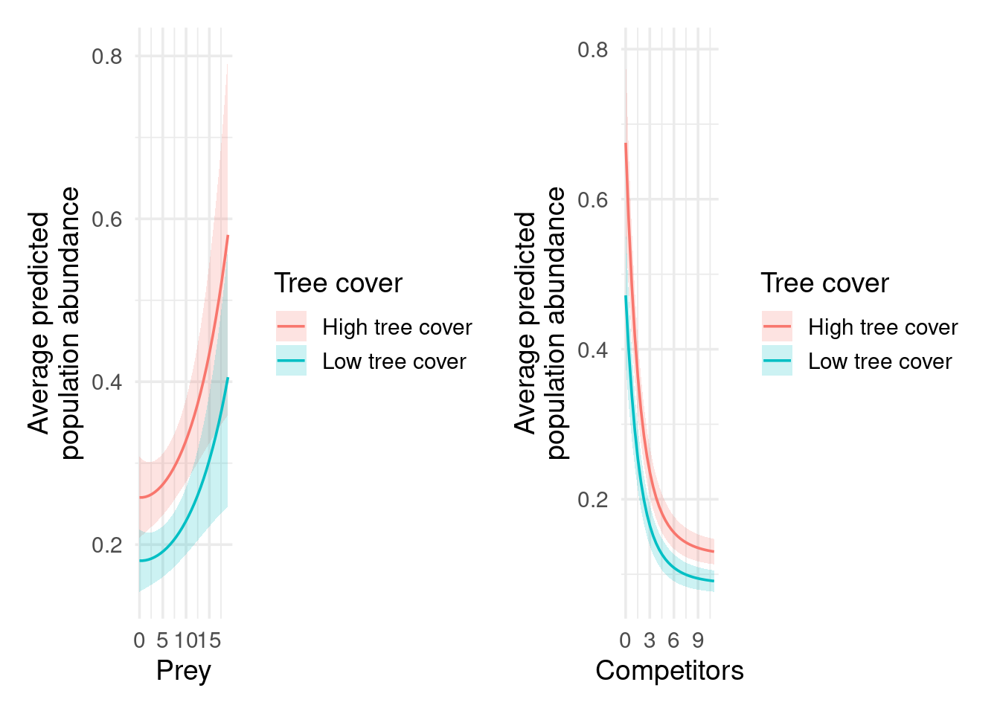
The shapes barely change between tree-cover panels — the prey × competitors interaction lives entirely in the abundance-when-present part. What changes is the overall height: high-tree-cover populations sit consistently above low-tree-cover ones, a pure occupancy effect, cleanly separated from the abundance-when-present shape.
A full rate-ratio table, by model component
# Conditional-model rate ratio for scl_prey, at three levels of scl_competitors
prey_rr_tbl <- avg_slopes(mod_hu, variables = "scl_prey", by = "scl_competitors",
newdata = datagrid(scl_competitors = c(-1, 0, 1)),
type = "link") |>
mutate(rate_ratio = exp(estimate), rr_low = exp(conf.low), rr_high = exp(conf.high),
Term = glue::glue("scl_prey (at scl_competitors = {scl_competitors} SD)")) |>
select(Term, rate_ratio, rr_low, rr_high, p.value)
# Conditional-model rate ratio for scl_competitors, at three levels of scl_prey
comp_rr_tbl <- avg_slopes(mod_hu, variables = "scl_competitors", by = "scl_prey",
newdata = datagrid(scl_prey = c(-1, 0, 1)),
type = "link") |>
mutate(rate_ratio = exp(estimate), rr_low = exp(conf.low), rr_high = exp(conf.high),
Term = glue::glue("scl_competitors (at scl_prey = {scl_prey} SD)")) |>
select(Term, rate_ratio, rr_low, rr_high, p.value)
# The interaction itself: ratio of rate ratios per 1-SD increase in the moderator
hu_confint <- confint(mod_hu)
hu_coef_cond <- summary(mod_hu)$coefficients$cond
hu_coef_zi <- summary(mod_hu)$coefficients$zi
interaction_rr_tbl <- tibble(
Term = "scl_prey:scl_competitors (interaction)",
rate_ratio = exp(hu_coef_cond["scl_prey:scl_competitors", "Estimate"]),
rr_low = exp(hu_confint["cond.scl_prey:scl_competitors", "2.5 %"]),
rr_high = exp(hu_confint["cond.scl_prey:scl_competitors", "97.5 %"]),
p.value = hu_coef_cond["scl_prey:scl_competitors", "Pr(>|z|)"]
)
# Zero-inflation-model odds ratio for scl_tree_cov (no moderator in this model)
zi_rr_tbl <- tibble(
Term = "scl_tree_cov (zero-inflation)",
rate_ratio = exp(hu_coef_zi["scl_tree_cov", "Estimate"]),
rr_low = exp(hu_confint["zi.scl_tree_cov", "2.5 %"]),
rr_high = exp(hu_confint["zi.scl_tree_cov", "97.5 %"]),
p.value = hu_coef_zi["scl_tree_cov", "Pr(>|z|)"]
)
hu_rr_tbl <- bind_rows(
prey_rr_tbl |> mutate(Component = "Conditional (abundance, when present)"),
comp_rr_tbl |> mutate(Component = "Conditional (abundance, when present)"),
interaction_rr_tbl |> mutate(Component = "Conditional (abundance, when present)"),
zi_rr_tbl |> mutate(Component = "Zero-inflation (occupancy, as an odds ratio)")
) |>
relocate(Component) |>
mutate(
across(c(rate_ratio, rr_low, rr_high), ~ round(.x, 3)),
p.value = if_else(p.value < 0.001, "<0.001", as.character(round(p.value, 3))),
CI_95 = glue::glue("[{rr_low}, {rr_high}]")
) |>
select(Component, Term, `Rate/odds ratio` = rate_ratio, `95% CI` = CI_95, `p-value` = p.value)
hu_rr_tbl |>
tt(caption = "Standardized rate ratios (conditional model) and odds ratio (zero-inflation model) for mod_hu") |>
style_tt(i = which(hu_rr_tbl$Component != dplyr::lag(hu_rr_tbl$Component, default = "")) - 1,
j = 1:5, line = "b", line_color = "black", line_width = 0.05)| Component | Term | Rate/odds ratio | 95% CI | p-value |
|---|---|---|---|---|
| Conditional (abundance, when present) | scl_prey (at scl_competitors = -1 SD) | 1.194 | [1.111, 1.283] | <0.001 |
| Conditional (abundance, when present) | scl_prey (at scl_competitors = 0 SD) | 0.952 | [0.86, 1.054] | 0.346 |
| Conditional (abundance, when present) | scl_prey (at scl_competitors = 1 SD) | 0.760 | [0.631, 0.914] | 0.004 |
| Conditional (abundance, when present) | scl_competitors (at scl_prey = -1 SD) | 0.611 | [0.533, 0.702] | <0.001 |
| Conditional (abundance, when present) | scl_competitors (at scl_prey = 0 SD) | 0.488 | [0.441, 0.54] | <0.001 |
| Conditional (abundance, when present) | scl_competitors (at scl_prey = 1 SD) | 0.389 | [0.337, 0.449] | <0.001 |
| Conditional (abundance, when present) | scl_prey:scl_competitors (interaction) | 0.798 | [0.724, 0.879] | <0.001 |
| Zero-inflation (occupancy, as an odds ratio) | scl_tree_cov (zero-inflation) | 0.842 | [0.76, 0.932] | <0.001 |
Prey’s rate ratio crosses 1 somewhere around average competitor density (why its raw summary() estimate looked like noise); competitors suppress abundance more as prey increases; the interaction row (~0.81) is the single number behind both patterns, and it’s the same number whichever predictor you treat as the moderator — the symmetry point from a few sections back, visible directly in the table. Tree cover’s odds ratio in the zero-inflation part tells a simpler, interaction-free story about occupancy alone.
🧪 Exercise 7 / Homework
Now apply what we learned today to your own data!
Part 3 takeaways
- Non-linear link functions (logit, log) create an implicit interaction: every predictor’s response-scale effect depends on the values of all other predictors, even with no interaction term in the formula
- Raw GLM coefficients live on the link scale;
marginaleffects::slopes()converts them to the natural (probability, count) scale for you - Multiplicative summaries (rate ratios, odds ratios) stay constant across the range of other predictors; additive, response-scale summaries do not
- Whether an interaction “exists” can depend on the scale you’re measuring on (Spake et al. 2023) — this applies just as much to implicit link-function interactions as to explicit interaction terms
- Hurdle/zero-inflated models separate “does it occur” from “how much, given it occurs” — interpret each part separately, or combine them (
type = "response") for a population-scale answer - Interactions are mathematically symmetric: report (or at least check) both “A moderated by B” and “B moderated by A”
Further reading
- Full write-ups with additional detail and 3D visualizations: Part 1, Part 2, Part 3
marginaleffectsdocumentation: https://marginaleffects.com/- Spake et al. (2023), on interactions in GLMs: https://onlinelibrary.wiley.com/doi/full/10.1111/brv.12939
- Mize (2019), best practices for interaction effects: https://sociologicalscience.com/articles-v6-4-81/